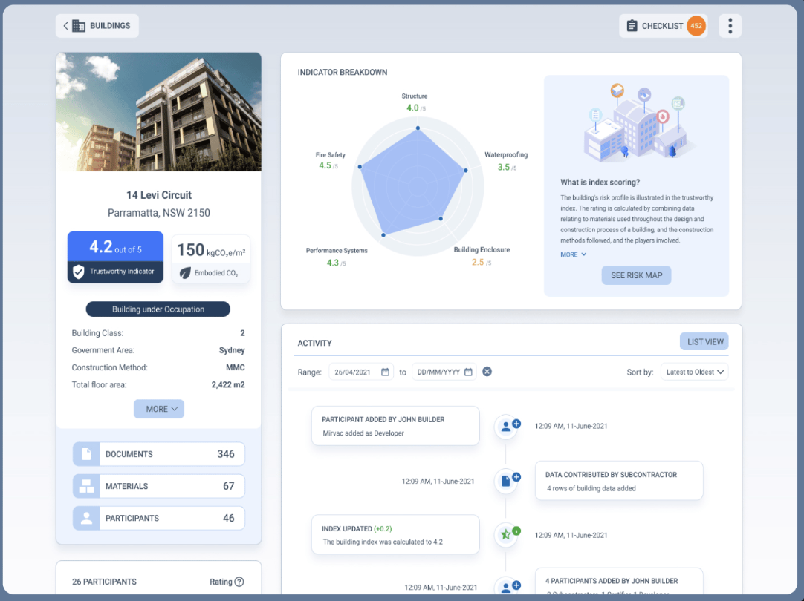

The reduction of physical assets into interlinked dependencies
Consistent methodology to achieve success in the market

Modern digital interface for BTI product

Working For: KPMG Origins & The Department of Customer Services (NSW Government)
Industry: Construction and Government
A market-led, digital product deployed in NSW Australia to enable the differentiation of construction assets (e.g. Residential Apartment Blocks) based on a quantitative assessment of the trustworthiness of the construction of those assets.
The project was lead by the NSW Government’s Dept. of Customer Service to restore consumer confidence in the NSW construction sector.
This assessment took into consideration WHO the participants were in the construction, WHAT materials were used and HOW the construction had been certified throughout and the end of construction.
The heart of this product was a model developed by myself, with input from actuaries within KPMG Australia, academics from Western Sydney University and wider Industry Experts.
Core Technologies
- Root Cause Analysis
- Bayesian Networks & MCMC
- Python, C# & PostgreSQL
- Azure & Docker with Kubernetes
Building Up Skills
- Go-to-market and sales product experience.
- Navigating public, institutional and private industry partnerships.
Key Outcomes
- An expandable model for mapping the internal dependencies of real-world construction assets, backed by both academia and industry.
- A reproducible methodology for converting qualitative properties into comparable indexes, approved by the wider industry.
- Launched a complex, high-quality digital product.
- Onboarded 25+ companies and 100+ assets in the first year, improving consumer confidence in the residential market.
External Links